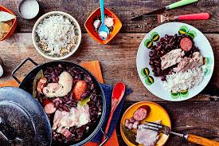
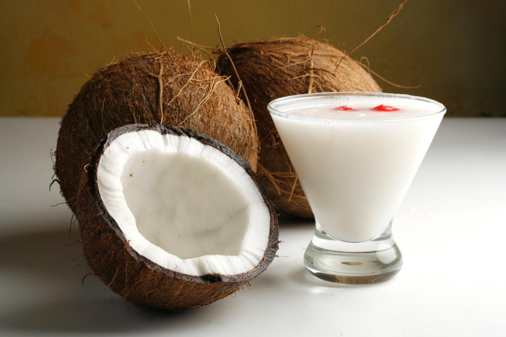
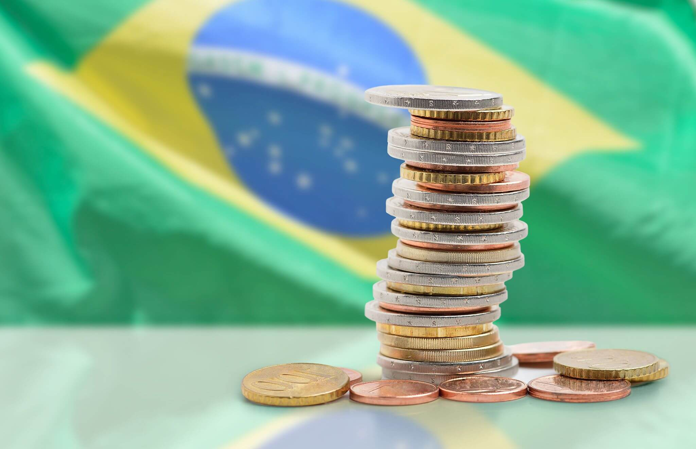
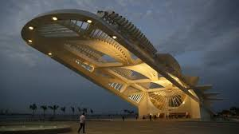
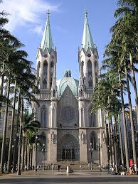
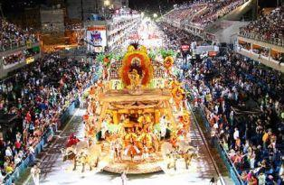

Brasil

La gastronomía de Brasil tiene influencia de la cocina europea, africana e indígena. El plato nacional de la gastronomía brasileña es la feijoada. Otros platos típicos son: la moqueca y el churrasco. Se suelen acompañar de arroz.
Los postres tradicionales son los brigadeiros, la cocada, los beijinhos y la goiababa. La bebida nacional es la caipirinha, hecha a base del aguardiente de cachaça, además son populares el vino y la cerveza. Las bebidas que se toman en Brasil los batidos de zumo de frutas con hielo picado y el café. La gastronomía brasileña utiliza ingredientes como la yuca, el ñame y frutas como el açaí, cupuaçu, mango, papaya, guayaba, naranja y piña.

Politica y Economia.Brasil, situada en América del Sur, tiene una superficie de 8.515.770 Km2, así pues, es uno de los países más grandes del mundo.
Brasil, con una población de 210.147.000 personas, es uno de los países más poblados del mundo 25 habitantes por Km2.
Su capital es Brasilia y su moneda Reales brasileños.
Brasil es una de las 10 economías más importantes del mundo por volumen de PIB. Su deuda pública en 2019 fue de 1.469.669 millones de euros, con una deuda del 89,47% del PIB. Su deuda per cápita es de 6.994€ euros por habitante.
Arquitectura y Arte.En la Plaza Mauá de Río de Janeiro, en el Puerto Maravilla, sobre la bahía de Guanabara, el Museu do Amanhã (Museo del Mañana),se han instalado las mejores galerías: históricas, como Luisa Strina y Fortes Vilaça, junto a otras más recientes pero que pisan fuerte en la escena internacional. como Vermelho. Son espacios con arquitecturas espectaculares, en algunos casos, donde conviven las artes plásticas con otras muchas disciplinas. En Río de Janeiro, en cambio, las galerías suplen la falta de espacios tan singulares con mucho talento y originalidad.Representa la fe y la simpatía del pueblo carioca. Considerado el atractivo central de Río de Janeiro, el Cristo Redentor es la obra art decó más grande del mundo con 38 metros de altura y un peso de 1 200 toneladas.
Religion.La mayor parte de la población brasileña, el 91,5%, es creyente. La religión más extendida es el Cristianismo, con un 88,23% de personas que lo profesan.
En los últimos años el porcentaje de creyentes ha disminuido, ha pasado del 91,91% al 91,5%. En cuanto al Cristianismo ha aumentado, en la encuesta anterior lo profesaban el 85,82% y según los últimos datos lo profesa el 88,23% de la población.
Cultura y Lenguaje.Si hay una tradición por la que Brasil ha conseguido ganarse el reconocimiento mundial es por su famoso y colorido carnaval. Cuarenta días antes del inicio de la Pascua las calles de Brasil, especialmente las del Nordeste y de Río de Janeiro, se llenan de color, luces, desfiles, fiesta y sobre todo mucha alegría al son del ritmo brasileño,La samba es sin duda la banda sonora que mejor define la vida y la alegría de un país tan colorido y alegre como es Brasil. Su ritmo se ha convertido ya en una tradición y llena de ritmo cualquier evento y celebración que se precie,La Fiesta de los Reyes en Brasil, es una de las grandes costumbres tradicionales del país que tiene lugar cada 5 de enero y en ella se hace referencia al episodio bíblico en el que los Reyes Magos siguen la estrella de Belén para encontrar al Niño Jesús en la religión católica.
Los hombres salen a la calle y recitan en verso el episodio de los Reyes Magos llegando a Belén mientras visitan las casas de familiares y amigos montados a caballo, andando e incluso en barco,Cada 2 de febrero tiene lugar en Brasil la fiesta tradicional de Iemanjá diosa del mar y protectora de los barcos y de los marineros que representa la fertilidad. EL origen de esta celebración está en la historia de 29 pescadores que imploraron a la diosa del mar al no obtener pescado que comer. A partir de estas plegarias la pesca comenzó a ser mucho más fructífera, de ahí que cada año se rememora este “milagro” con cientos de ofrendas para la reina de las aguas,entre muchas mas.Su idioma es Portugues.
Todos los derechos reservados Lavyeska Nicole Quiñones Vidrio 2021©